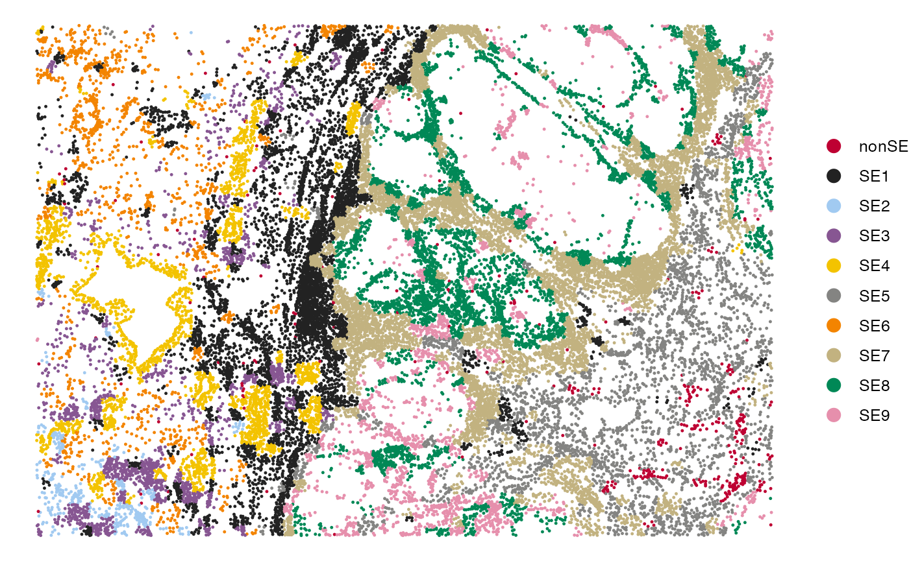

Recovery of Spatial Ecotypes from Spatial Transcriptomics Data
Source:vignettes/Recovery_Spatial.Rmd
Recovery_Spatial.RmdSE recovery from single-cell spatial data
In this tutorial, we will demonstrate how to recover spatial ecotypes (SEs) from single-cell spatial transcriptomics data profiled by platforms such as MERSCOPE, CosMx SMI, or Xenium. We will use a subset of a melanoma MERSCOPE sample to illustrate the SE recovery process. The expression data and single-cell metadata can be downloaded from the Google Drive. In this data, single cells were categorized into nine major cell types, including B cells, CD4+ T cells, CD8+ T cells, NK cells, plasma cells, macrophages, dendritic cells (DC), fibroblasts, and endothelial cells.
First load required packages for this vignette
suppressPackageStartupMessages(library(dplyr))
suppressPackageStartupMessages(library(ggplot2))
suppressPackageStartupMessages(library(Seurat))
suppressPackageStartupMessages(library(data.table))
suppressPackageStartupMessages(library(googledrive))
library(SpatialEcoTyper)Loading data
Download the demo data from Google Drive:
drive_deauth() # Disable Google sign-in requirement
drive_download(as_id("13Rc5Rsu8jbnEYYfUse-xQ7ges51LcI7n"), "HumanMelanomaPatient1_subset_counts.tsv.gz", overwrite = TRUE)
drive_download(as_id("12xcZNhpT-xbhcG8kX1QAdTeM9TKeFAUW"), "HumanMelanomaPatient1_subset_scmeta.tsv", overwrite = TRUE)Load the gene expression matrix and meta data into R.
# Load single-cell gene expression matrix. Rows are genes, columns are cells.
scdata <- fread("HumanMelanomaPatient1_subset_counts.tsv.gz",
sep = "\t",header = TRUE, data.table = FALSE)
rownames(scdata) <- scdata[, 1]
scdata <- as.matrix(scdata[, -1])
head(scdata[, 1:5])## HumanMelanomaPatient1__cell_3655 HumanMelanomaPatient1__cell_3657
## PDK4 0 1
## TNFRSF17 0 0
## ICAM3 0 0
## FAP 1 0
## GZMB 0 0
## TSC2 0 0
## HumanMelanomaPatient1__cell_3658 HumanMelanomaPatient1__cell_3660
## PDK4 1 0
## TNFRSF17 0 0
## ICAM3 0 0
## FAP 0 0
## GZMB 0 0
## TSC2 0 0
## HumanMelanomaPatient1__cell_3661
## PDK4 0
## TNFRSF17 0
## ICAM3 0
## FAP 0
## GZMB 0
## TSC2 0
# Load single-cell metadata, with at least three columns, including X, Y, and CellType
scmeta <- read.table("HumanMelanomaPatient1_subset_scmeta.tsv",
sep = "\t",header = TRUE, row.names = 1)
scdata = scdata[, match(rownames(scmeta), colnames(scdata))]
head(scmeta[, c("X", "Y", "CellType")])## X Y CellType
## HumanMelanomaPatient1__cell_3655 1894.706 -6367.766 Fibroblast
## HumanMelanomaPatient1__cell_3657 1942.480 -6369.602 Fibroblast
## HumanMelanomaPatient1__cell_3658 1963.007 -6374.026 Fibroblast
## HumanMelanomaPatient1__cell_3660 1981.600 -6372.266 Fibroblast
## HumanMelanomaPatient1__cell_3661 1742.939 -6374.851 Fibroblast
## HumanMelanomaPatient1__cell_3663 1921.683 -6383.309 FibroblastData normalization
The gene expression data should be normalized for the SE recovery. The data can be normalized using SCTransform or NormalizeData.
Here, we are normalizing using SCTransform normalization. We recommend to install the glmGamPoi package for faster computation.
if(!"glmGamPoi" %in% installed.packages()){
BiocManager::install("glmGamPoi")
}
tmpobj <- CreateSeuratObject(scdata) %>%
SCTransform(clip.range = c(-10, 10), verbose = FALSE)
seurat_version = as.integer(gsub("\\..*", "", as.character(packageVersion("SeuratObject"))))
if(seurat_version<5){
normdata <- GetAssayData(tmpobj, "data")
}else{
normdata <- tmpobj[["SCT"]]$data
}NormalizeData for the normalization
normdata <- NormalizeData(scdata)SE recovery
The RecoverSE function will be used to assign single cells into SEs. Users can either use the default models to recover predefined SEs or use custom models to recover newly defined SEs.
Note: To recover SEs from single-cell data, you must
specify either celltypes or se_results in the
RecoverSE function. If neither
is provided, it will assume that the input data represents spot-level
spatial transcriptomics, and SE abundances will be inferred directly
from each spot.
The default NMF models were trained on discovery MERSCOPE data, encompassing five cancer types: melanoma, and four carcinomas. These models are tailored to nine distinct cell types: B cells, CD4+ T cells, CD8+ T cells, NK cells, plasma cells, macrophages, dendritic cells, fibroblasts, and endothelial cells. Each model facilitates the recovery of SEs from single-cell datasets, allowing for cell-type-specific SE analysis. Thus, for SE recovery using default models, the cells in the query data should be grouped into one of “B”, “CD4T”, “CD8T”, “NK”, “Plasma”, “Macrophage”, “DC”, “Fibroblast”, and “Endothelial”, case sensitive. All the other cell types will be considered non-SE compartments.
Using default models (1)
Before SE recovery, we recommend to use a unified embedding of spatial microregions by performing de novo Spatial EcoTyper analysis, which integrate gene expression and spatial information. This embedding could enhance the accuracy and refinement of SE recovery results. The detailed tutorial for Spatial EcoTyper analysis is available at Discovery of Spatial Ecotypes from a Single-cell Spatial Dataset.
For demonstration purposes, we used SpatialEcoTyper to
group cells into spatial clusters with a resolution of 10. In practice,
we recommend experimenting with multiple resolutions to ensure robust
and reliable results.
## make sure the cells are grouped into one of "B", "CD4T", "CD8T", "NK", "Plasma", "Macrophage", "DC", "Fibroblast", and "Endothelial".
print(unique(scmeta$CellType))## [1] "Fibroblast" "Endothelial" "DC" "Macrophage" "CD8T"
## [6] "CD4T" "Plasma" "NK" "B"
## Spatial EcoTyper analysis: it would take ~2 min
emb = SpatialEcoTyper(normdata, scmeta, resolution = 10)
emb$obj ## A seurat object including the spatial embedding## An object of class Seurat
## 2315 features across 2315 samples within 1 assay
## Active assay: RNA (2315 features, 2315 variable features)
## 3 layers present: counts, data, scale.data
## 2 dimensional reductions calculated: pca, umap## X Y CellType SE
## HumanMelanomaPatient1__cell_3655 1894.706 -6367.766 Fibroblast SE25
## HumanMelanomaPatient1__cell_3657 1942.480 -6369.602 Fibroblast SE29
## HumanMelanomaPatient1__cell_3658 1963.007 -6374.026 Fibroblast SE29
## HumanMelanomaPatient1__cell_3660 1981.600 -6372.266 Fibroblast SE29
## HumanMelanomaPatient1__cell_3661 1742.939 -6374.851 Fibroblast SE48
## HumanMelanomaPatient1__cell_3663 1921.683 -6383.309 Fibroblast SE25Then specify the se_results in the RecoverSE function for SE
recovery.
## HumanMelanomaPatient1__cell_3655 HumanMelanomaPatient1__cell_3657
## "SE1" "SE4"
## HumanMelanomaPatient1__cell_3658 HumanMelanomaPatient1__cell_3660
## "SE4" "SE4"
## HumanMelanomaPatient1__cell_3661 HumanMelanomaPatient1__cell_3663
## "SE3" "SE1"Using default models (2)
You can also recover the SEs without using spatial embedding, which could be less accurate due to the lack of spatial information. The cell type annotations are required in this case. Cells should be grouped into one of “B”, “CD4T”, “CD8T”, “NK”, “Plasma”, “Macrophage”, “DC”, “Fibroblast”, and “Endothelial”, case sensitive. All the other cell types will be considered non-SE compartments.
Using custom models
To use custom models, users should first develop recovery models following the tutorial Development of SE Recovery Models. The resulting models can be used for SE recovery. An example model is available at SE_Recovery_W_list.rds.
# Download SE recovery model
drive_download(as_id("171WaAe49babYB85Cn1FcoNNE-lzYp1T_"), "SE_Recovery_W_list.rds", overwrite = TRUE)Using custom models by specifying the Ws argument:
Ws <- readRDS("SE_Recovery_W_list.rds")
## make sure the cell type names are consistent.
print(unique(scmeta$CellType))
print(names(Ws))
sepreds <- RecoverSE(normdata, celltypes = scmeta$CellType, Ws = Ws)
## If Spatial EcoTyper result is available, we recommend:
sepreds <- RecoverSE(normdata, se_results = emb, Ws = Ws)Visualization of SEs in the tissue
## Add the recovery result into the meta data
scmeta$RecoveredSE <- sepreds[rownames(scmeta)]
## Visualize the SE recovery results
SpatialView(scmeta, by = "RecoveredSE")
Recovery of spatial ecotypes from Visium Spatial Gene Expression data
To recover SEs from Visium spatial transcriptomics data, we first infer SE abundances from each spot. Each spot is then assigned to the SE with the highest inferred abundance, enabling the spatial mapping of SEs across the tissue. In this tutorial, we will use a breast cancer sample to demonstrate the SE recovery from a Visium data. The expression data can be accessed from: V1_Breast_Cancer_Block_A_Section_1_filtered_feature_bc_matrix.h5, which was downloaded from 10x Genomics datasets.
Loading data
First, download the data from Google Drive
drive_download(as_id("15D9LgvZmCZUfsL62cD67JMf8Jcq_UyuB"), "V1_Breast_Cancer_Block_A_Section_1_filtered_feature_bc_matrix.h5", overwrite = TRUE)
drive_download(as_id("15NTZc1HrW_gLS_pmi1ckYLw30kNarf4w"), "V1_Breast_Cancer_Block_A_Section_1_tissue_positions_list.csv", overwrite = TRUE)
## This download should be done within 1 min.Load the expression data into R using the Read10X_h5
function from the Seurat package.
if(!"hdf5r" %in% installed.packages()) BiocManager::install("hdf5r")
require("hdf5r")
# Load Visium gene expression matrix. Rows are genes, columns are spots.
dat <- Read10X_h5("V1_Breast_Cancer_Block_A_Section_1_filtered_feature_bc_matrix.h5")
# normalize the expression data
dat <- NormalizeData(dat)
meta <- read.csv("V1_Breast_Cancer_Block_A_Section_1_tissue_positions_list.csv",
header = FALSE, row.names = 1)
colnames(meta) <- c("tissue", "row", "col", "imagerow", "imagecol")
meta <- meta[colnames(dat), ]
head(meta)## tissue row col imagerow imagecol
## AAACAAGTATCTCCCA-1 1 50 102 15632 17782
## AAACACCAATAACTGC-1 1 59 19 17734 6447
## AAACAGAGCGACTCCT-1 1 14 94 7079 16716
## AAACAGGGTCTATATT-1 1 47 13 14882 5637
## AAACAGTGTTCCTGGG-1 1 73 43 21069 9712
## AAACATTTCCCGGATT-1 1 61 97 18242 17091SE recovery
If neither celltypes nor se_results are
specified, the RecoverSE
function will assume the input data is a gene-by-spot gene expression
matrix and infer SE abundances across spots. Users have the option to
either use the default models to recover predefined SEs or apply custom
models to recover newly defined SEs.
Using default models
## SE1 SE2 SE3 SE4
## AAACAAGTATCTCCCA-1 2.127701e-04 6.877800e-05 3.979458e-01 8.534547e-02
## AAACACCAATAACTGC-1 1.321616e-01 6.347672e-02 4.580604e-02 9.893653e-02
## AAACAGAGCGACTCCT-1 1.658118e-01 2.438595e-15 1.257332e-01 1.021615e-01
## AAACAGGGTCTATATT-1 6.495088e-02 1.975689e-16 2.208619e-01 6.972421e-10
## AAACAGTGTTCCTGGG-1 9.104830e-02 2.073793e-01 2.579438e-09 6.489594e-02
## AAACATTTCCCGGATT-1 6.684999e-13 2.987802e-01 2.908525e-08 7.202254e-07
## SE5 SE6 SE7 SE8
## AAACAAGTATCTCCCA-1 1.162860e-01 1.723712e-16 3.026670e-01 2.078080e-02
## AAACACCAATAACTGC-1 4.542600e-07 4.511416e-01 3.746409e-16 1.333849e-01
## AAACAGAGCGACTCCT-1 7.829883e-03 3.928577e-05 3.462729e-01 2.635185e-04
## AAACAGGGTCTATATT-1 8.604433e-03 1.976922e-16 7.055828e-01 1.739479e-09
## AAACAGTGTTCCTGGG-1 1.529680e-06 2.947065e-01 2.356171e-15 1.632831e-01
## AAACATTTCCCGGATT-1 1.993179e-11 1.996192e-01 3.022784e-16 2.576151e-01
## SE9 nonSE
## AAACAAGTATCTCCCA-1 1.755819e-02 5.913523e-02
## AAACACCAATAACTGC-1 4.131729e-03 7.096041e-02
## AAACAGAGCGACTCCT-1 1.684507e-02 2.350429e-01
## AAACAGGGTCTATATT-1 1.975689e-16 2.054490e-11
## AAACAGTGTTCCTGGG-1 2.351639e-06 1.786829e-01
## AAACATTTCCCGGATT-1 7.419167e-02 1.697931e-01
## This step would take ~3 minutes to completeUsing custom models
To develop SE recovery models, users should follow the tutorial Developing SE Recovery Models. The
resulting models can be used for SE recovery. An example model is
available at SE_Recovery_W_list.rds.
By specifying the Ws parameter (a list of
cell-type-specific W matrices) in the RecoverSE function, the custom
models will be used for recovering SEs.
# Download SE recovery model
drive_download(as_id("171WaAe49babYB85Cn1FcoNNE-lzYp1T_"), "SE_Recovery_W_list.rds", overwrite = TRUE)
Ws <- readRDS("SE_Recovery_W_list.rds")
## Using custom models by specifying the Ws argument
preds <- RecoverSE(normdata, Ws = Ws)
## This step would take ~3 minutes to completeVisualization of SEs in the tissue
Each spot can be assigned to the SE with the highest inferred abundance, and the spatial mapping of SEs can be visualized using the SpatialView function.
meta$RecoveredSE = colnames(preds)[apply(preds, 1, which.max)]
meta$Y = -meta$row
SpatialView(meta, by = "RecoveredSE", X = "col", Y = "Y", pt.size = 2)
Session info
The session info allows users to replicate the exact environment and identify potential discrepancies in package versions or configurations that might be causing problems.
## R version 4.4.1 (2024-06-14)
## Platform: aarch64-apple-darwin20
## Running under: macOS 15.1
##
## Matrix products: default
## BLAS: /Library/Frameworks/R.framework/Versions/4.4-arm64/Resources/lib/libRblas.0.dylib
## LAPACK: /Library/Frameworks/R.framework/Versions/4.4-arm64/Resources/lib/libRlapack.dylib; LAPACK version 3.12.0
##
## locale:
## [1] en_US.UTF-8/en_US.UTF-8/en_US.UTF-8/C/en_US.UTF-8/en_US.UTF-8
##
## time zone: America/Los_Angeles
## tzcode source: internal
##
## attached base packages:
## [1] parallel stats graphics grDevices utils datasets methods
## [8] base
##
## other attached packages:
## [1] hdf5r_1.3.11 SpatialEcoTyper_1.0.0 NMF_0.28
## [4] Biobase_2.64.0 BiocGenerics_0.50.0 cluster_2.1.6
## [7] rngtools_1.5.2 registry_0.5-1 RANN_2.6.2
## [10] Matrix_1.7-0 googledrive_2.1.1 data.table_1.16.0
## [13] Seurat_5.1.0 SeuratObject_5.0.2 sp_2.1-4
## [16] ggplot2_3.5.1 dplyr_1.1.4
##
## loaded via a namespace (and not attached):
## [1] RcppAnnoy_0.0.22 splines_4.4.1
## [3] later_1.3.2 tibble_3.2.1
## [5] R.oo_1.26.0 polyclip_1.10-7
## [7] fastDummies_1.7.4 lifecycle_1.0.4
## [9] doParallel_1.0.17 pals_1.9
## [11] globals_0.16.3 lattice_0.22-6
## [13] MASS_7.3-60.2 magrittr_2.0.3
## [15] plotly_4.10.4 sass_0.4.9
## [17] rmarkdown_2.28 jquerylib_0.1.4
## [19] yaml_2.3.10 httpuv_1.6.15
## [21] glmGamPoi_1.16.0 sctransform_0.4.1
## [23] spam_2.10-0 spatstat.sparse_3.1-0
## [25] reticulate_1.39.0 mapproj_1.2.11
## [27] cowplot_1.1.3 pbapply_1.7-2
## [29] RColorBrewer_1.1-3 maps_3.4.2
## [31] zlibbioc_1.50.0 abind_1.4-5
## [33] GenomicRanges_1.56.1 Rtsne_0.17
## [35] purrr_1.0.2 R.utils_2.12.3
## [37] GenomeInfoDbData_1.2.12 circlize_0.4.16
## [39] IRanges_2.38.1 S4Vectors_0.42.1
## [41] ggrepel_0.9.6 irlba_2.3.5.1
## [43] listenv_0.9.1 spatstat.utils_3.1-0
## [45] goftest_1.2-3 RSpectra_0.16-2
## [47] spatstat.random_3.3-1 fitdistrplus_1.2-1
## [49] parallelly_1.38.0 DelayedMatrixStats_1.26.0
## [51] pkgdown_2.1.0 DelayedArray_0.30.1
## [53] leiden_0.4.3.1 codetools_0.2-20
## [55] tidyselect_1.2.1 shape_1.4.6.1
## [57] farver_2.1.2 UCSC.utils_1.0.0
## [59] matrixStats_1.4.1 stats4_4.4.1
## [61] spatstat.explore_3.3-2 jsonlite_1.8.8
## [63] GetoptLong_1.0.5 progressr_0.14.0
## [65] ggridges_0.5.6 survival_3.6-4
## [67] iterators_1.0.14 systemfonts_1.1.0
## [69] foreach_1.5.2 tools_4.4.1
## [71] ragg_1.3.2 ica_1.0-3
## [73] Rcpp_1.0.13 glue_1.7.0
## [75] SparseArray_1.4.8 gridExtra_2.3
## [77] xfun_0.47 MatrixGenerics_1.16.0
## [79] GenomeInfoDb_1.40.1 withr_3.0.1
## [81] BiocManager_1.30.25 fastmap_1.2.0
## [83] fansi_1.0.6 digest_0.6.37
## [85] R6_2.5.1 mime_0.12
## [87] textshaping_0.4.0 colorspace_2.1-1
## [89] scattermore_1.2 tensor_1.5
## [91] dichromat_2.0-0.1 spatstat.data_3.1-2
## [93] R.methodsS3_1.8.2 utf8_1.2.4
## [95] tidyr_1.3.1 generics_0.1.3
## [97] S4Arrays_1.4.1 httr_1.4.7
## [99] htmlwidgets_1.6.4 uwot_0.2.2
## [101] pkgconfig_2.0.3 gtable_0.3.5
## [103] ComplexHeatmap_2.20.0 lmtest_0.9-40
## [105] XVector_0.44.0 htmltools_0.5.8.1
## [107] dotCall64_1.1-1 clue_0.3-65
## [109] scales_1.3.0 png_0.1-8
## [111] spatstat.univar_3.0-1 knitr_1.48
## [113] rstudioapi_0.16.0 reshape2_1.4.4
## [115] rjson_0.2.22 nlme_3.1-164
## [117] curl_5.2.2 cachem_1.1.0
## [119] zoo_1.8-12 GlobalOptions_0.1.2
## [121] stringr_1.5.1 KernSmooth_2.23-24
## [123] miniUI_0.1.1.1 desc_1.4.3
## [125] pillar_1.9.0 grid_4.4.1
## [127] vctrs_0.6.5 promises_1.3.0
## [129] xtable_1.8-4 evaluate_0.24.0
## [131] cli_3.6.3 compiler_4.4.1
## [133] rlang_1.1.4 crayon_1.5.3
## [135] future.apply_1.11.2 labeling_0.4.3
## [137] plyr_1.8.9 fs_1.6.4
## [139] stringi_1.8.4 viridisLite_0.4.2
## [141] deldir_2.0-4 gridBase_0.4-7
## [143] munsell_0.5.1 lazyeval_0.2.2
## [145] spatstat.geom_3.3-2 RcppHNSW_0.6.0
## [147] patchwork_1.2.0 bit64_4.5.2
## [149] sparseMatrixStats_1.16.0 future_1.34.0
## [151] shiny_1.9.1 highr_0.11
## [153] SummarizedExperiment_1.34.0 ROCR_1.0-11
## [155] gargle_1.5.2 igraph_2.0.3
## [157] bslib_0.8.0 bit_4.5.0